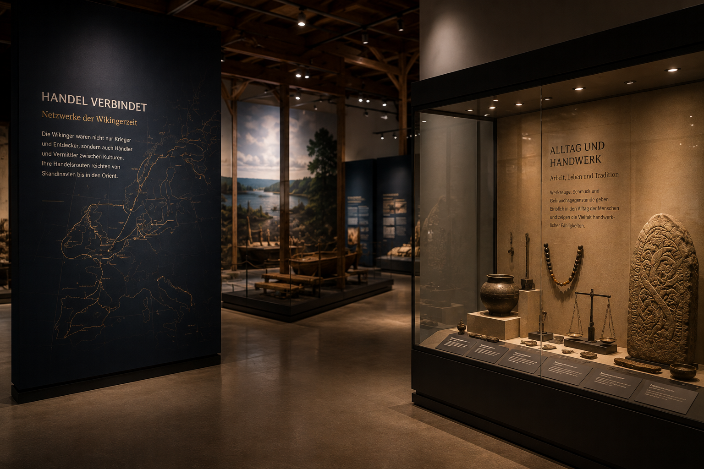

Historischer Kontext
Das Langhaus war Wohnraum, Arbeitsplatz, Lager und sozialer Mittelpunkt. Kleidung, Essen, Werkzeuge und Hausbau zeigen, wie stark das Leben von Jahreszeiten, Klima, Arbeitsteilung und Gemeinschaft geprägt war.
Alltag & Leben
Wikinger Kleidung: Stoffe, Farben, Schnitte und Alltag der Menschen im Norden.
Wikingerwissen verständlich erklärt
Der Alltag der Wikingerzeit war viel reicher als das Klischee vom wilden Krieger. Menschen lebten in Familien, arbeiteten mit Holz, Metall, Wolle und Leder, kümmerten sich um Vorräte, Tiere, Kinder und Handel. Gerade diese Alltagswelt macht Geschichte greifbar.
Wikinger Kleidung ist deshalb ein gutes Einstiegsthema: Wikinger Kleidung war praktisch, aber keineswegs langweilig: Farben, Schmuck und Stoffe zeigten Status.
Das Langhaus war Wohnraum, Arbeitsplatz, Lager und sozialer Mittelpunkt. Kleidung, Essen, Werkzeuge und Hausbau zeigen, wie stark das Leben von Jahreszeiten, Klima, Arbeitsteilung und Gemeinschaft geprägt war.
Archäologische Funde wie Kämme, Messer, Webgewichte, Schmuck, Keramik oder Knochenreste erzählen oft mehr über das tägliche Leben als spektakuläre Waffen. Sie zeigen, was Menschen tatsächlich benutzten, reparierten, verloren oder mit ins Grab bekamen.

Vertiefter Wissensartikel
Archäologische Funde wie Kämme, Messer, Webgewichte, Schmuck, Keramik oder Knochenreste erzählen oft mehr über das tägliche Leben als spektakuläre Waffen. Sie zeigen, was Menschen tatsächlich benutzten, reparierten, verloren oder mit ins Grab bekamen.
Das Langhaus war Wohnraum, Arbeitsplatz, Lager und sozialer Mittelpunkt. Kleidung, Essen, Werkzeuge und Hausbau zeigen, wie stark das Leben von Jahreszeiten, Klima, Arbeitsteilung und Gemeinschaft geprägt war.
Das Thema verbindet schnelle Suchfragen mit echtem Hintergrundwissen. Genau dadurch eignet es sich für ein Wissensportal rund um Wikingerzeit und Museum.
Vertiefung
Kleidung schützte vor Wetter, zeigte aber auch Status. Stoffe, Farben, Schmuck, Gürtel und Fibeln machten Unterschiede sichtbar.
Gerade für Besucherinnen und Besucher ist diese Einordnung wichtig: Das Thema wird nicht isoliert betrachtet, sondern mit konkreten Fragen verbunden. Was ist historisch belegt? Was stammt aus späteren Erzählungen? Und welche Motive wurden erst durch moderne Medien besonders populär?
So entsteht ein Zugang, der sowohl für schnelle Google-Suchen als auch für einen Museumsbesuch funktioniert. Wer nur eine kurze Antwort sucht, findet Orientierung. Wer tiefer einsteigen möchte, entdeckt verwandte Themen im SAARVIK-Wissensbereich.
Kurz & spannend
Wolle war der wichtigste Stoff für Wikinger Kleidung.
Fibeln dienten nicht nur als Schmuck, sondern hielten Kleidung zusammen.
Viele Kleidungsstücke wurden mit natürlichen Farbstoffen gefärbt.
Museum Saarbrücken
Im SAARVIK Museum wird das Thema mit Objekten, Bildern und interaktiven Stationen verknüpft.
Statt nur Jahreszahlen auswendig zu lernen, entsteht ein Zusammenhang: Objekte, Bilder, Karten, Geschichten und interaktive Stationen machen die Wikingerzeit greifbar. Gerade deshalb eignet sich das Thema für Familien, Schulklassen und alle, die Geschichte nicht trocken, sondern anschaulich erleben möchten.
Besonders stark wird der Lerneffekt, wenn Besucher mehrere Themen miteinander vergleichen: Runen erklären Schrift und Erinnerung, Schiffe erklären Mobilität, Kleidung erklärt Alltag, Waffen erklären Handwerk und Status, Götter erklären Erzählungen und Weltbilder.
Die meisten Kleidungsstücke bestanden aus Wolle und Leinen. Wohlhabendere Menschen konnten feinere Stoffe und zusätzlichen Schmuck tragen.
Nein. Für die Wikingerzeit gibt es keine Belege für Hörnerhelme im Alltag oder Kampf. Dieses Bild entstand erst viele Jahrhunderte später.
Kleidung war nicht nur grau oder braun. Mit Pflanzen und anderen natürlichen Farbstoffen konnten Stoffe blau, rot, gelb oder grün gefärbt werden.
Frauen trugen meist lange Kleider, Schürzenkleider und Schmuck. Fibeln hielten Stoffe zusammen und konnten gleichzeitig Status zeigen.
Männer trugen Tuniken, Hosen, Gürtel und Umhänge. Die Kleidung musste praktisch für Arbeit, Reisen und das nordische Klima sein.
Historische Rekonstruktionen, Serien, Filme und Mittelaltermärkte haben das Interesse an Kleidung der Wikingerzeit stark erhöht.
Diese Themen ergänzen Wikinger Kleidung besonders gut:
Wikinger Kleidung Wikinger Essen Wikinger Häuser Wikinger Frauen Wikinger Kinder